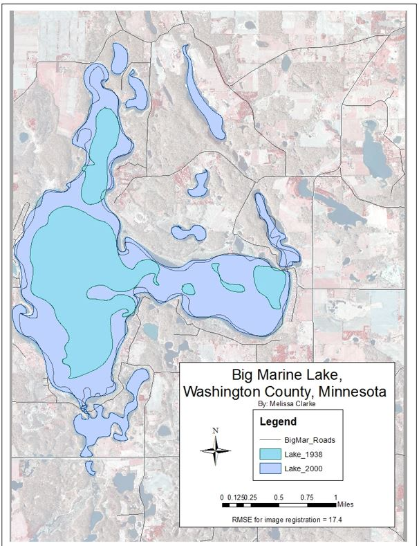

Welcome to
GIS Tool
By Melissa Clarke
Examine A Website worth visiting

The Geographic Information System projects examined through the website are the works of Melissa Clarke. Throughout College, Melissa had dedicated her studies to the practice of GIS and has become well equipt with the practices. The tools gatherd will help public and private institutions represent information of statistical and locational data through GIS.
The map on the left is a Georeferenced map of lake Big Marine located in Washington County, Minnesota. The two years of the lake being compared are 1938 and 2000, there were three different data layers used to help reference the Lake at different times. The image comparison was difficult due to the different coordinate systems, as a result the data points from previous Big Marine Lake were used to help provide the digitized pattern of the Lake during 1938.
As the control points were placed, the Lake eventurally matched up with the current geographic setting. An examination of the difference in points resulted in the Root Mean square Error of 17.4. The consistency of the point distribution seemed to be an accurate representation of the Lake with a low RMSE registration.
Beautiful Maps to showcase GIS work
The top map above is a QGIS map that displays the elevation change in New Brunswick, Canada. QGIS is an open source geographic information systems program that will showcase all types of map. The image above was taken through a satellite that was downloaded through USGS website. The shapefile was then created through tools in QGIS and the illuminated contour was created after proper coding.
The bottom map is a Digital Elevation Model, DEM, that shows the lower St. Croix watershed in Minnesota. USGS data was recovered from this location and started off in a black and white shaded relief map. The spatial anaylsis tool opened the hillshade tool that helped represent the proper sun direction called Azimuth. The Azimuth was set to a 315 while the elevation to the sun went to 25 so that the veritcal exaggeration was able to stay at 4. The hillshade was then set ontop of the DEM with a 50% transparency.